R Notebook
Last updated: 2018-12-30
workflowr checks: (Click a bullet for more information)-
✔ R Markdown file: up-to-date
Great! Since the R Markdown file has been committed to the Git repository, you know the exact version of the code that produced these results.
-
✔ Environment: empty
Great job! The global environment was empty. Objects defined in the global environment can affect the analysis in your R Markdown file in unknown ways. For reproduciblity it’s best to always run the code in an empty environment.
-
✔ Seed:
set.seed(20181026)The command
set.seed(20181026)was run prior to running the code in the R Markdown file. Setting a seed ensures that any results that rely on randomness, e.g. subsampling or permutations, are reproducible. -
✔ Session information: recorded
Great job! Recording the operating system, R version, and package versions is critical for reproducibility.
-
Great! You are using Git for version control. Tracking code development and connecting the code version to the results is critical for reproducibility. The version displayed above was the version of the Git repository at the time these results were generated.✔ Repository version: 349ad97
Note that you need to be careful to ensure that all relevant files for the analysis have been committed to Git prior to generating the results (you can usewflow_publishorwflow_git_commit). workflowr only checks the R Markdown file, but you know if there are other scripts or data files that it depends on. Below is the status of the Git repository when the results were generated:
Note that any generated files, e.g. HTML, png, CSS, etc., are not included in this status report because it is ok for generated content to have uncommitted changes.Ignored files: Ignored: output/10x-180504 Ignored: output/10x-180504-aligned Ignored: output/10x-180504-aligned-metageneplot Ignored: output/10x-180504-beforeQC Ignored: output/10x-180504-beforeqc Ignored: output/10x-180504-cca-discardedcells Ignored: output/10x-180504-ccregout Ignored: output/10x-180504-ccregout-aligned Ignored: output/10x-180504-ccregout-cca-discardedcells Ignored: output/10x-180831 Ignored: output/10x-180831-T1T2T3 Ignored: output/10x-180831-T4T5 Ignored: output/10x-180831-beforeqc Ignored: output/10x-180831-notcleaned Ignored: output/monocle/
Expand here to see past versions:
| File | Version | Author | Date | Message |
|---|---|---|---|---|
| Rmd | 349ad97 | PytrikFolkertsma | 2018-12-30 | wflow_publish(c(“analysis/10x-180504-general-analysis.Rmd”)) |
| html | c371fa5 | PytrikFolkertsma | 2018-12-30 | Build site. |
| Rmd | f14a5d3 | PytrikFolkertsma | 2018-12-30 | wflow_publish(c(“analysis/10x-180504-general-analysis.Rmd”)) |
| html | d93befd | PytrikFolkertsma | 2018-12-13 | Build site. |
| html | 3057bde | PytrikFolkertsma | 2018-12-07 | Build site. |
| Rmd | 1d58055 | PytrikFolkertsma | 2018-12-07 | wflow_publish(c(“analysis/10x-180504-general-analysis.Rmd”)) |
| html | 17c2de8 | PytrikFolkertsma | 2018-12-05 | Build site. |
| Rmd | 807a1cb | PytrikFolkertsma | 2018-12-05 | wflow_publish(c(“analysis/10x-180504-general-analysis.Rmd”)) |
| html | 2b73a74 | PytrikFolkertsma | 2018-12-05 | Build site. |
| Rmd | 02cc2fe | PytrikFolkertsma | 2018-12-05 | wflow_publish(c(“analysis/10x-180504-general-analysis.Rmd”)) |
| html | d806c41 | PytrikFolkertsma | 2018-11-12 | Build site. |
| html | 6e36947 | PytrikFolkertsma | 2018-11-07 | Build site. |
| Rmd | 1c178af | PytrikFolkertsma | 2018-11-07 | wflow_publish(c(“analysis/10x-180504-alignment.Rmd”, “analysis/10x-180504-beforeQC.Rmd”, |
| Rmd | 9ef503f | PytrikFolkertsma | 2018-11-05 | before QC analysis |
| html | 19b3950 | PytrikFolkertsma | 2018-11-05 | Build site. |
| Rmd | 673b520 | PytrikFolkertsma | 2018-11-05 | wflow_publish(c(“analysis/10x-180504-general-analysis.Rmd”)) |
| html | 661156c | PytrikFolkertsma | 2018-11-05 | Build site. |
| Rmd | 76112cb | PytrikFolkertsma | 2018-11-05 | wflow_publish(c(“analysis/10x-180504-general-analysis.Rmd”)) |
| html | 9e51a0a | PytrikFolkertsma | 2018-11-02 | Build site. |
| html | eaa7e4a | PytrikFolkertsma | 2018-11-02 | Build site. |
| Rmd | 120215c | PytrikFolkertsma | 2018-11-02 | general analysis + alignment |
| html | 120215c | PytrikFolkertsma | 2018-11-02 | general analysis + alignment |
| html | 1f7e0da | PytrikFolkertsma | 2018-10-30 | Build site. |
| Rmd | f7080f1 | PytrikFolkertsma | 2018-10-30 | wflow_publish(c(“analysis/10x-180504-general-analysis.Rmd”, |
Analysis of the 10x-180504 samples.
Loading the required packages and datasets.
library(Seurat)
library(dplyr)
all10x.beforeqc <- readRDS('output/10x-180504-beforeQC')
all10x <- readRDS('output/10x-180504')
all10x.ccregout <- readRDS('output/10x-180504-ccregout')Before QC
pm <- VlnPlot(all10x.beforeqc, features.plot='percent.mito', group.by='sample_name', point.size.use = -1, do.return=T, x.lab.rot=T, size.x.use=8) + geom_hline(yintercept=0.08, linetype="dashed", color = "red")
pm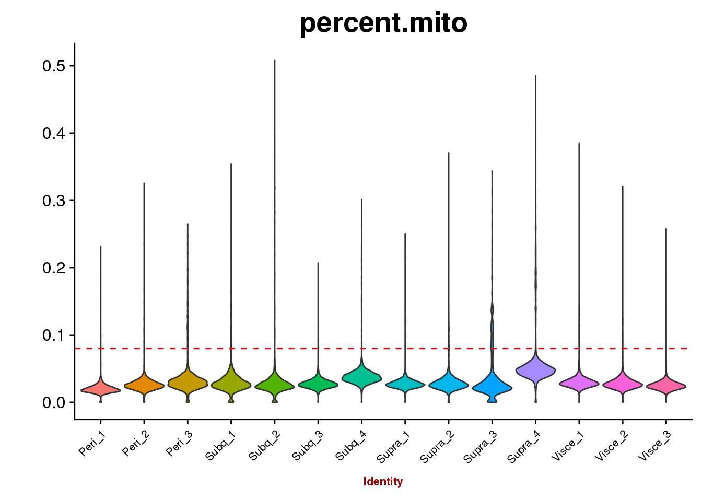
Expand here to see past versions of unnamed-chunk-2-1.png:
| Version | Author | Date |
|---|---|---|
| c371fa5 | PytrikFolkertsma | 2018-12-30 |
| 1f7e0da | PytrikFolkertsma | 2018-10-30 |
numi <- VlnPlot(all10x.beforeqc, features.plot='nUMI', group.by='sample_name', point.size.use = -1, do.return=T, x.lab.rot=T, size.x.use=8) + geom_hline(yintercept=110000, linetype="dashed", color = "red")
numi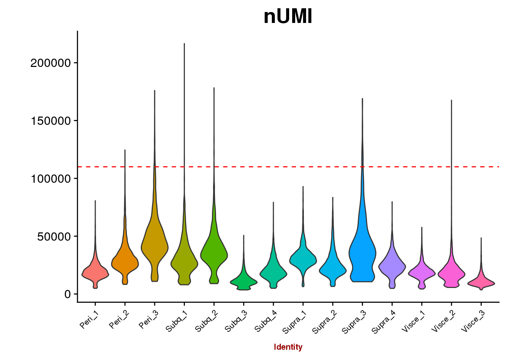
Expand here to see past versions of unnamed-chunk-3-1.png:
| Version | Author | Date |
|---|---|---|
| c371fa5 | PytrikFolkertsma | 2018-12-30 |
| 3057bde | PytrikFolkertsma | 2018-12-07 |
| 1f7e0da | PytrikFolkertsma | 2018-10-30 |
ngene <- VlnPlot(all10x.beforeqc, features.plot='nGene', group.by='sample_name', point.size.use = -1, do.return=T, x.lab.rot=T, size.x.use=8) + geom_hline(yintercept=200, linetype="dashed", color = "red") + geom_hline(yintercept=9000, linetype="dashed", color = "red")
ngeneWarning: Removed 1 rows containing missing values (geom_hline).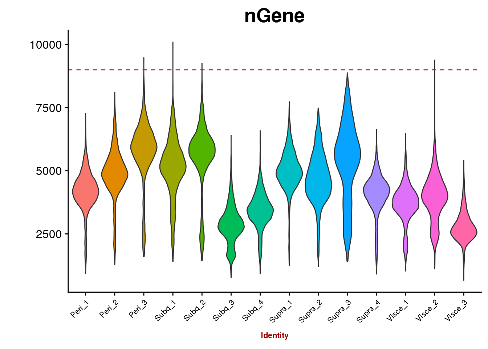
Expand here to see past versions of unnamed-chunk-4-1.png:
| Version | Author | Date |
|---|---|---|
| c371fa5 | PytrikFolkertsma | 2018-12-30 |
| 3057bde | PytrikFolkertsma | 2018-12-07 |
| 1f7e0da | PytrikFolkertsma | 2018-10-30 |
GenePlot(all10x.beforeqc, 'nUMI', 'nGene', cex.use = 0.2, do.return=T)Warning in plot.window(...): "do.return" is not a graphical parameterWarning in plot.xy(xy, type, ...): "do.return" is not a graphical parameterWarning in axis(side = side, at = at, labels = labels, ...): "do.return" is
not a graphical parameter
Warning in axis(side = side, at = at, labels = labels, ...): "do.return" is
not a graphical parameterWarning in box(...): "do.return" is not a graphical parameterWarning in title(...): "do.return" is not a graphical parameter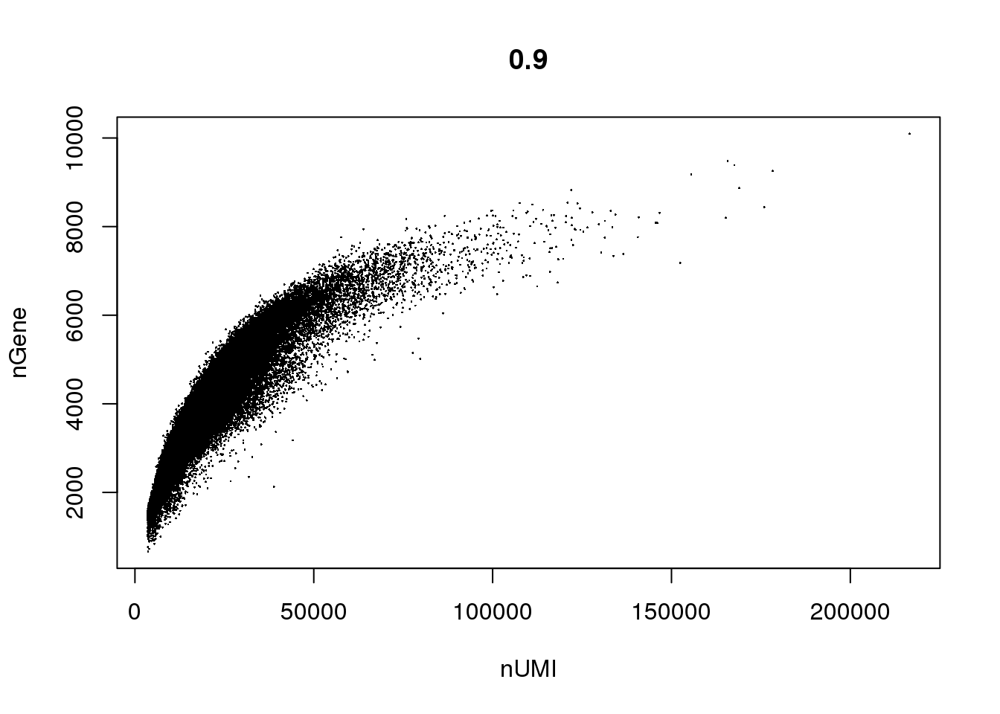
After QC
Number of cells and genes
all10xAn object of class seurat in project SeuratProject
24078 genes across 56371 samples.VlnPlot(all10x, features.plot='nGene', group.by='sample_name', point.size.use=-1, x.lab.rot=T)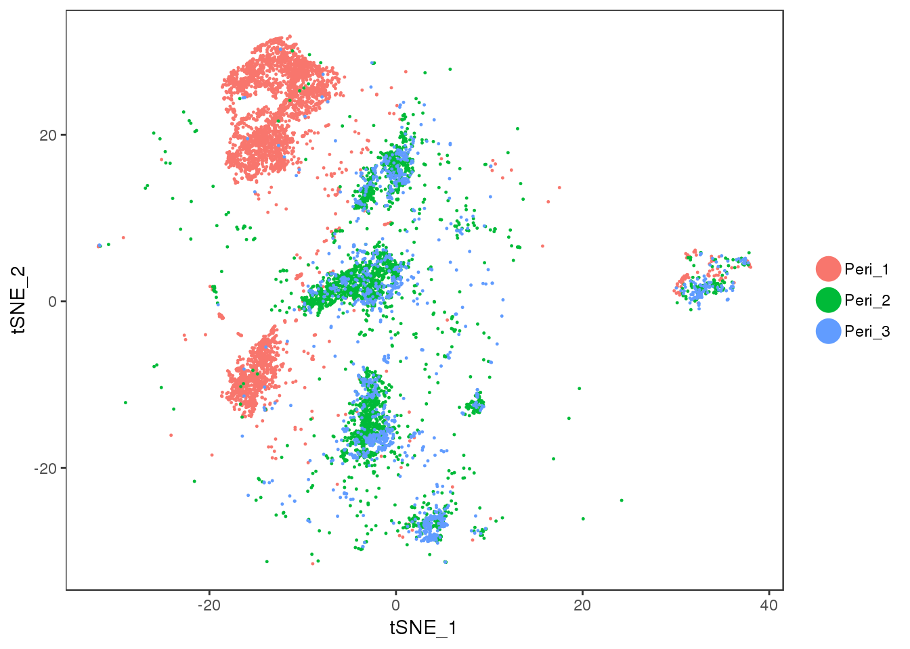
Expand here to see past versions of unnamed-chunk-7-1.png:
| Version | Author | Date |
|---|---|---|
| c371fa5 | PytrikFolkertsma | 2018-12-30 |
| 3057bde | PytrikFolkertsma | 2018-12-07 |
| d806c41 | PytrikFolkertsma | 2018-11-12 |
| 1f7e0da | PytrikFolkertsma | 2018-10-30 |
VlnPlot(all10x, features.plot='nUMI', group.by='sample_name', point.size.use=-1, x.lab.rot=T)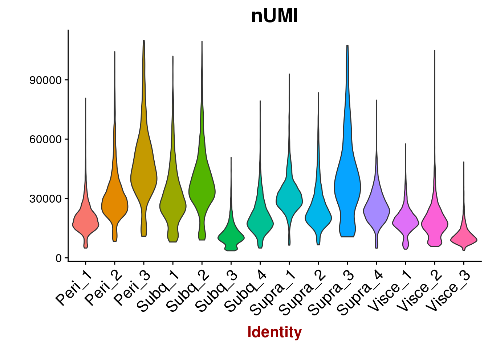
Expand here to see past versions of unnamed-chunk-8-1.png:
| Version | Author | Date |
|---|---|---|
| c371fa5 | PytrikFolkertsma | 2018-12-30 |
| 3057bde | PytrikFolkertsma | 2018-12-07 |
| 1f7e0da | PytrikFolkertsma | 2018-10-30 |
VlnPlot(all10x, features.plot='percent.mito', group.by='sample_name', point.size.use=-1, x.lab.rot=T)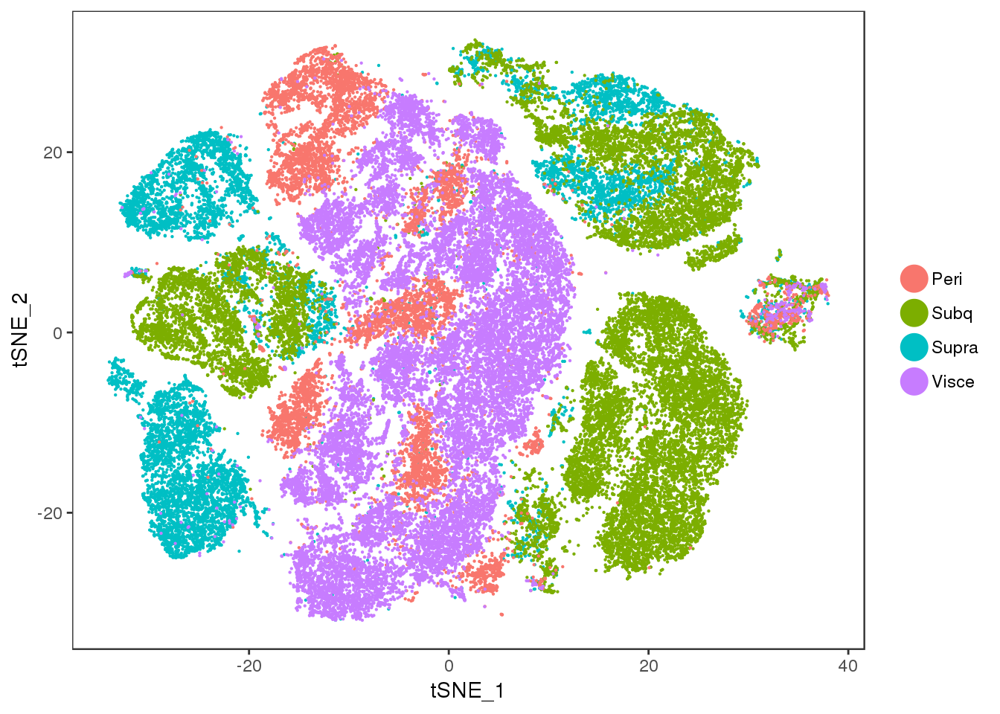
Expand here to see past versions of unnamed-chunk-9-1.png:
| Version | Author | Date |
|---|---|---|
| c371fa5 | PytrikFolkertsma | 2018-12-30 |
| 3057bde | PytrikFolkertsma | 2018-12-07 |
| d806c41 | PytrikFolkertsma | 2018-11-12 |
| 1f7e0da | PytrikFolkertsma | 2018-10-30 |
GenePlot(all10x, 'nUMI', 'nGene')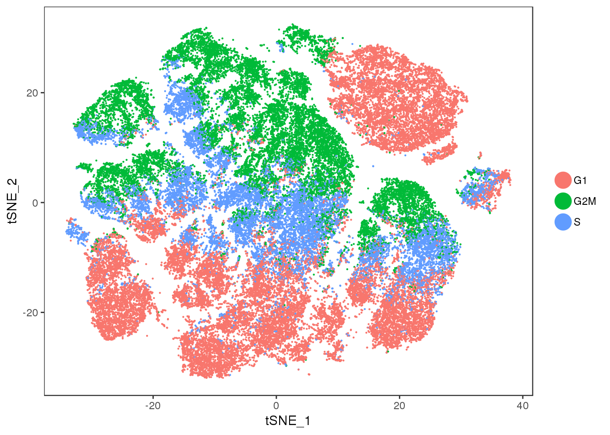
Expand here to see past versions of unnamed-chunk-10-1.png:
| Version | Author | Date |
|---|---|---|
| c371fa5 | PytrikFolkertsma | 2018-12-30 |
| 3057bde | PytrikFolkertsma | 2018-12-07 |
| d806c41 | PytrikFolkertsma | 2018-11-12 |
| 1f7e0da | PytrikFolkertsma | 2018-10-30 |
Number of cells before and after QC
before <- all10x.beforeqc@meta.data %>% count(sample_name)
after <- all10x@meta.data %>% count(sample_name)
ncells <- merge(before, after, by='sample_name', suffixes=c('.before', '.after'))
ncells sample_name n.before n.after
1 Peri_1 3973 3934
2 Peri_2 2889 2852
3 Peri_3 1346 1273
4 Subq_1 3087 3007
5 Subq_2 2071 2002
6 Subq_3 8661 8619
7 Subq_4 5022 4885
8 Supra_1 3056 3047
9 Supra_2 3664 3570
10 Supra_3 1035 880
11 Supra_4 3014 2785
12 Visce_1 4624 4539
13 Visce_2 4956 4893
14 Visce_3 10121 10085TSNE
Below are several tSNE plots of the 10x-180504 data. tSNE was performed on the first 15 principal components of the log-normalized scaled (nUMI and percent.mito regressed out) data.
Visceral and perirenal seem a bit mixed, and supraclavicular and subcutaneous too.
TSNEPlot(all10x, pt.size=0.1, group.by='sample_name', do.label=T)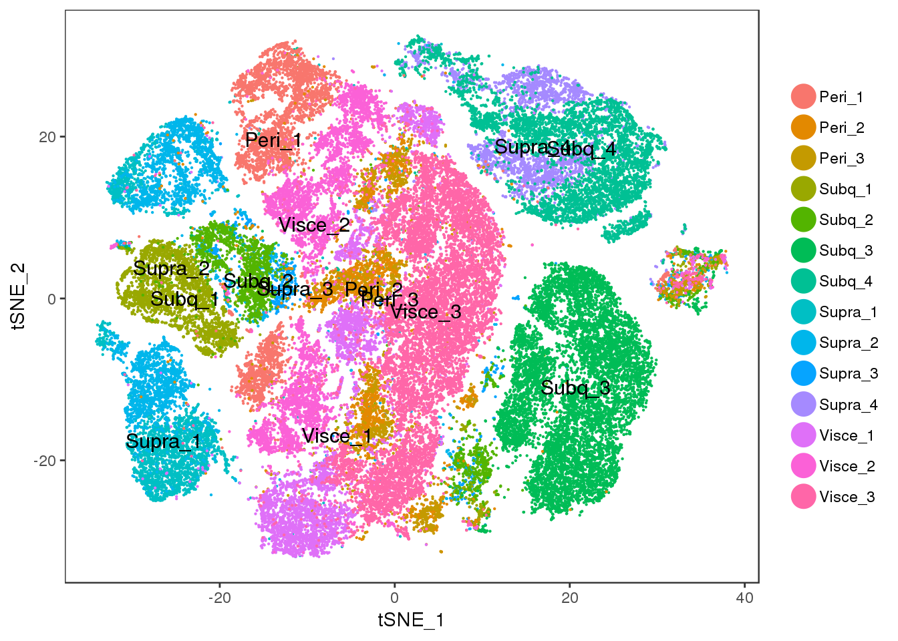
Expand here to see past versions of unnamed-chunk-12-1.png:
| Version | Author | Date |
|---|---|---|
| c371fa5 | PytrikFolkertsma | 2018-12-30 |
| 3057bde | PytrikFolkertsma | 2018-12-07 |
| d806c41 | PytrikFolkertsma | 2018-11-12 |
| 1f7e0da | PytrikFolkertsma | 2018-10-30 |
tSNE plots of samples within their depot. Peri2 and Peri3 seem to overlap really well, as well as Supra1 and Supra2, and Visce1 and Visce3.
plot_grid(t1, t2, t3, t4)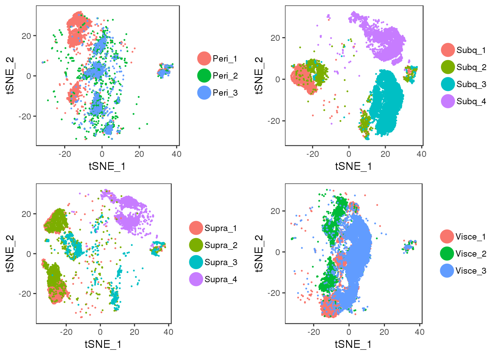
Expand here to see past versions of unnamed-chunk-14-1.png:
| Version | Author | Date |
|---|---|---|
| c371fa5 | PytrikFolkertsma | 2018-12-30 |
| 3057bde | PytrikFolkertsma | 2018-12-07 |
| d806c41 | PytrikFolkertsma | 2018-11-12 |
| 120215c | PytrikFolkertsma | 2018-11-02 |
| 1f7e0da | PytrikFolkertsma | 2018-10-30 |
tSNE colored on subtissue.
TSNEPlot(all10x, group.by='depot', pt.size=0.1)Expand here to see past versions of unnamed-chunk-15-1.png:
| Version | Author | Date |
|---|---|---|
| c371fa5 | PytrikFolkertsma | 2018-12-30 |
| 3057bde | PytrikFolkertsma | 2018-12-07 |
| 120215c | PytrikFolkertsma | 2018-11-02 |
| 1f7e0da | PytrikFolkertsma | 2018-10-30 |
tSNE colored by type.
TSNEPlot(all10x, group.by='type', pt.size=0.1, colors.use=c('#964B00', '#F7E7CE'))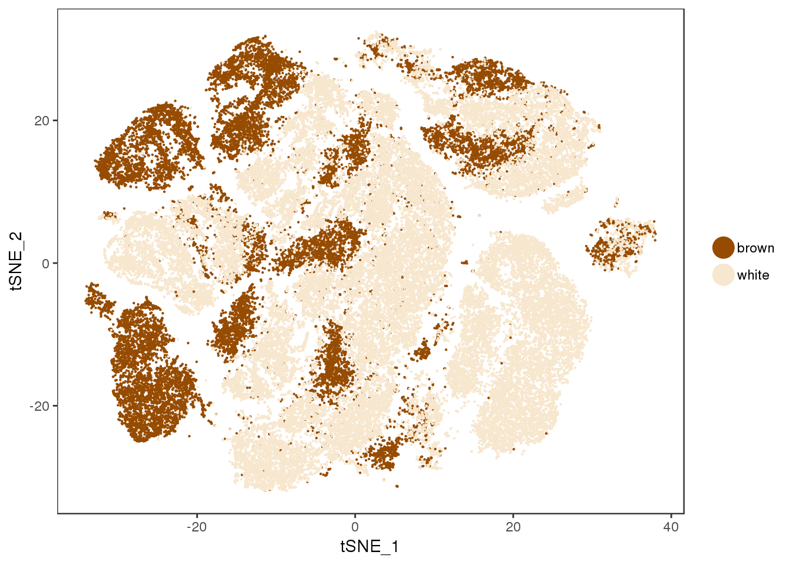
Expand here to see past versions of unnamed-chunk-16-1.png:
| Version | Author | Date |
|---|---|---|
| c371fa5 | PytrikFolkertsma | 2018-12-30 |
| 3057bde | PytrikFolkertsma | 2018-12-07 |
| 120215c | PytrikFolkertsma | 2018-11-02 |
| 1f7e0da | PytrikFolkertsma | 2018-10-30 |
tSNE colored by cell cycle phase.
TSNEPlot(all10x, group.by='Phase', pt.size=0.1)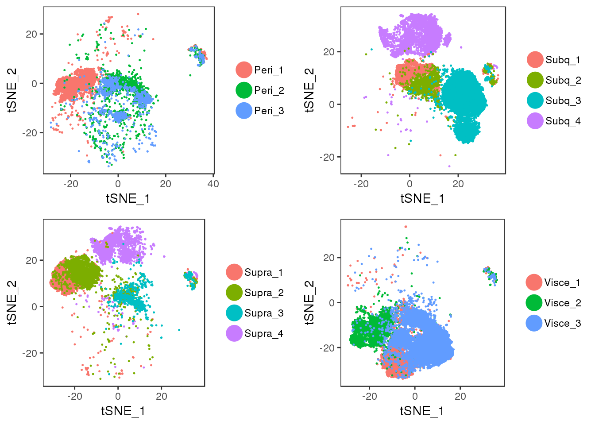
Clusters
Some clustering with different resolutions. res=0.5
TSNEPlot(all10x, pt.size=0.1, group.by='res.0.5', do.label=T)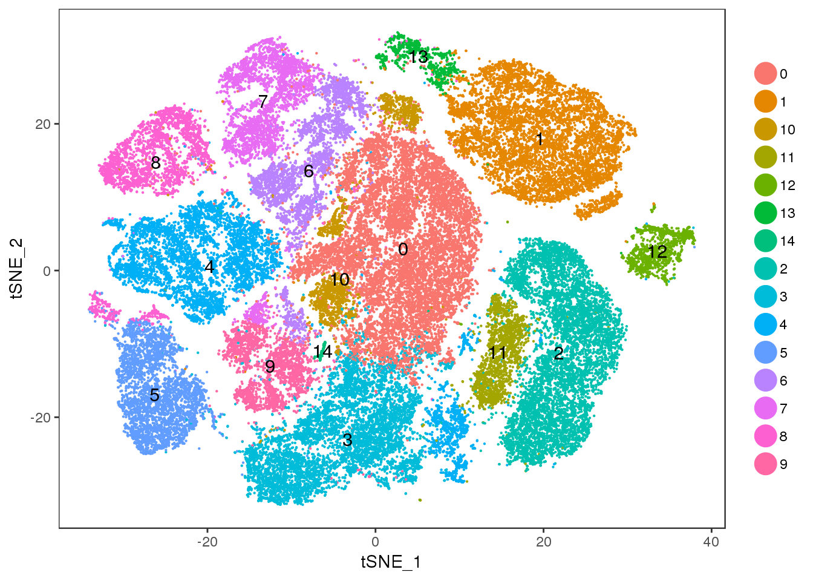
Expand here to see past versions of unnamed-chunk-18-1.png:
| Version | Author | Date |
|---|---|---|
| c371fa5 | PytrikFolkertsma | 2018-12-30 |
| 3057bde | PytrikFolkertsma | 2018-12-07 |
| 120215c | PytrikFolkertsma | 2018-11-02 |
| 1f7e0da | PytrikFolkertsma | 2018-10-30 |
res=0.7
TSNEPlot(all10x, pt.size=0.1, group.by='res.0.7', do.label=T)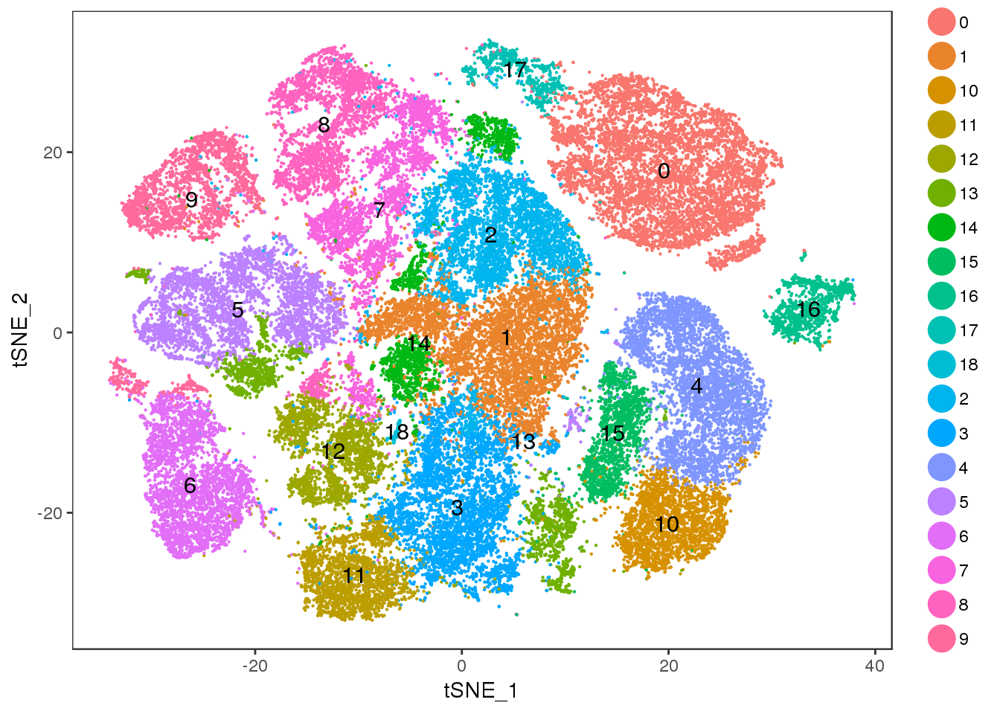
Expand here to see past versions of unnamed-chunk-19-1.png:
| Version | Author | Date |
|---|---|---|
| c371fa5 | PytrikFolkertsma | 2018-12-30 |
| 3057bde | PytrikFolkertsma | 2018-12-07 |
| 120215c | PytrikFolkertsma | 2018-11-02 |
| 1f7e0da | PytrikFolkertsma | 2018-10-30 |
res=1
TSNEPlot(all10x, pt.size=0.1, group.by='res.1', do.label=T)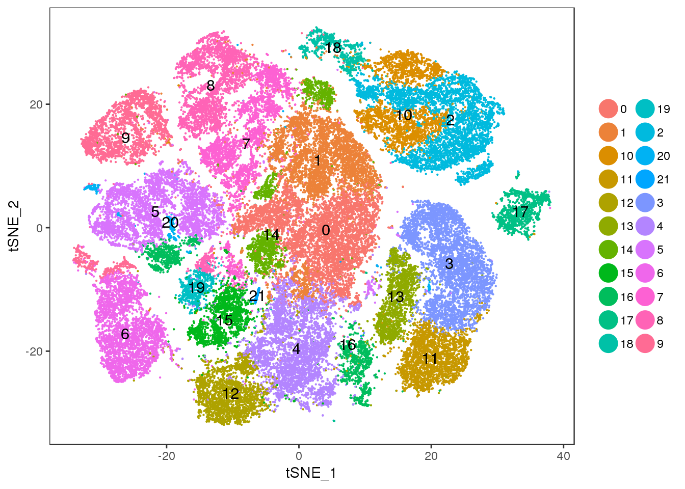
Cell cycle regression
T-SNE of the data with cell cycle effects regressed out. There does not seem to be a lot of structure within clusters now.
TSNEPlot(all10x.ccregout, pt.size=0.1, group.by='sample_name')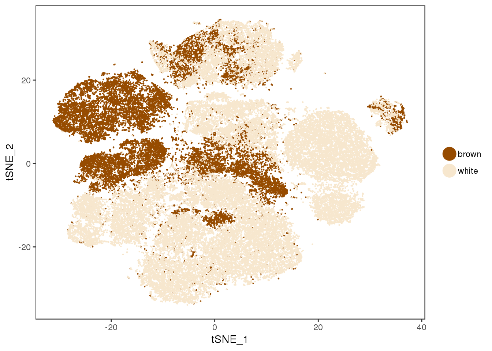
Expand here to see past versions of unnamed-chunk-21-1.png:
| Version | Author | Date |
|---|---|---|
| c371fa5 | PytrikFolkertsma | 2018-12-30 |
| 3057bde | PytrikFolkertsma | 2018-12-07 |
| d806c41 | PytrikFolkertsma | 2018-11-12 |
| 120215c | PytrikFolkertsma | 2018-11-02 |
| 1f7e0da | PytrikFolkertsma | 2018-10-30 |
No cell cycle effect anymore.
TSNEPlot(all10x.ccregout, pt.size=0.1, group.by='Phase')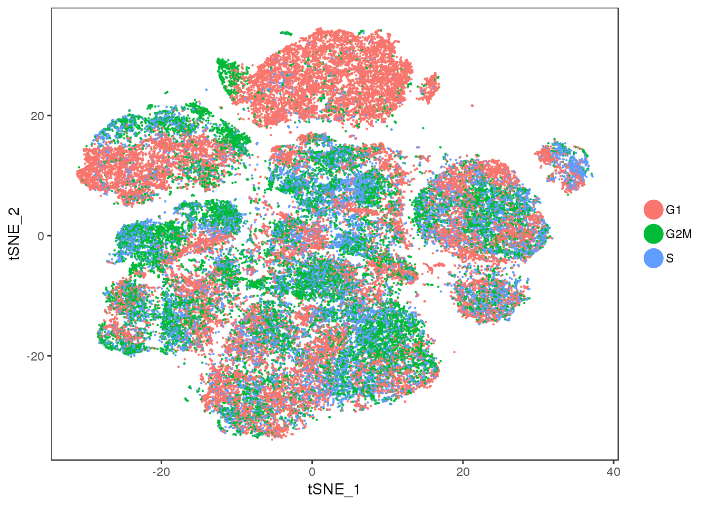
Expand here to see past versions of unnamed-chunk-22-1.png:
| Version | Author | Date |
|---|---|---|
| c371fa5 | PytrikFolkertsma | 2018-12-30 |
| 3057bde | PytrikFolkertsma | 2018-12-07 |
| d806c41 | PytrikFolkertsma | 2018-11-12 |
| 120215c | PytrikFolkertsma | 2018-11-02 |
| 1f7e0da | PytrikFolkertsma | 2018-10-30 |
Subtissues
plot_grid(t1, t2, t3, t4)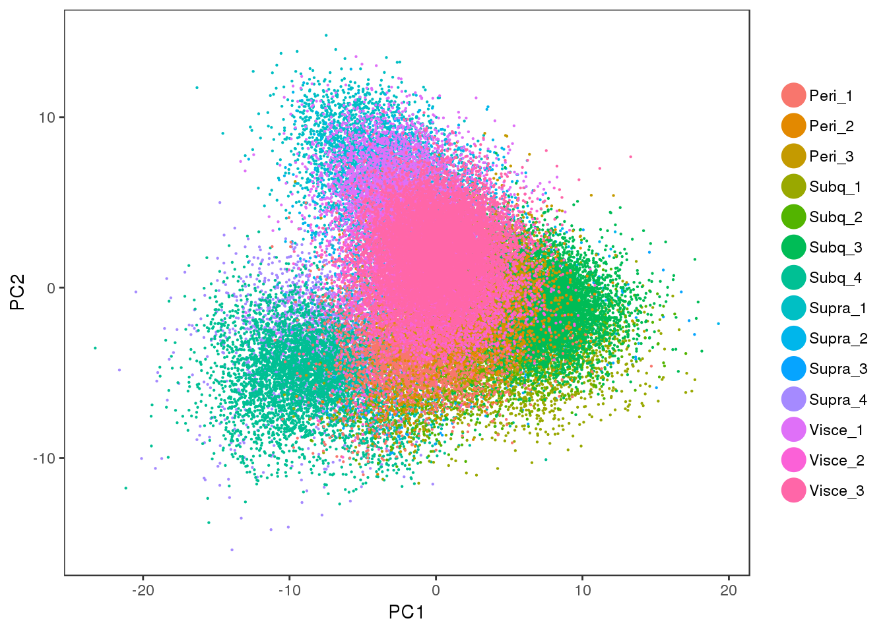
Expand here to see past versions of unnamed-chunk-24-1.png:
| Version | Author | Date |
|---|---|---|
| c371fa5 | PytrikFolkertsma | 2018-12-30 |
| 3057bde | PytrikFolkertsma | 2018-12-07 |
| d806c41 | PytrikFolkertsma | 2018-11-12 |
| 120215c | PytrikFolkertsma | 2018-11-02 |
TSNEPlot(all10x.ccregout, pt.size=0.1, group.by='depot')Expand here to see past versions of unnamed-chunk-25-1.png:
| Version | Author | Date |
|---|---|---|
| c371fa5 | PytrikFolkertsma | 2018-12-30 |
| 3057bde | PytrikFolkertsma | 2018-12-07 |
| d806c41 | PytrikFolkertsma | 2018-11-12 |
| 120215c | PytrikFolkertsma | 2018-11-02 |
TSNEPlot(all10x.ccregout, group.by='type', pt.size=0.1, colors.use=c('#964B00', '#F7E7CE'))PCA
Some PCA plots. PC1 seems to capture cell cycle effects, and PC2 seems to capture some of the sample variability.
PCAPlot(all10x, group.by='Phase', pt.size=0.1)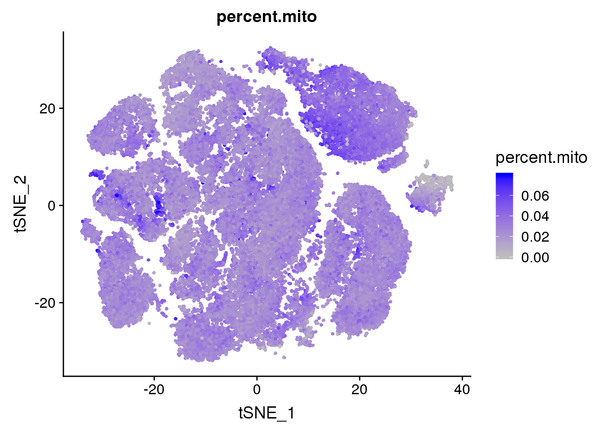
Expand here to see past versions of unnamed-chunk-27-1.png:
| Version | Author | Date |
|---|---|---|
| c371fa5 | PytrikFolkertsma | 2018-12-30 |
| 3057bde | PytrikFolkertsma | 2018-12-07 |
| d806c41 | PytrikFolkertsma | 2018-11-12 |
| 120215c | PytrikFolkertsma | 2018-11-02 |
PCAPlot(all10x, group.by='sample_name', pt.size=0.1)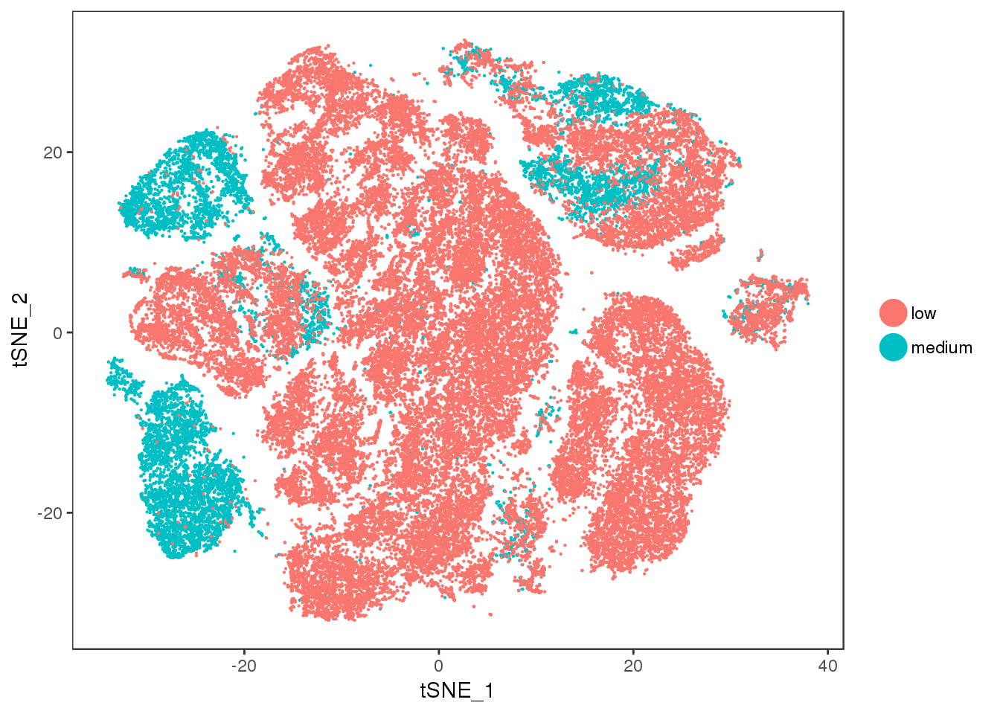
Expand here to see past versions of unnamed-chunk-28-1.png:
| Version | Author | Date |
|---|---|---|
| c371fa5 | PytrikFolkertsma | 2018-12-30 |
| 3057bde | PytrikFolkertsma | 2018-12-07 |
| d806c41 | PytrikFolkertsma | 2018-11-12 |
| 120215c | PytrikFolkertsma | 2018-11-02 |
PCA plot of the cell cycle regressed out data. There is no cell cycle effect anymore.
PCAPlot(all10x.ccregout, group.by='Phase', pt.size=0.1)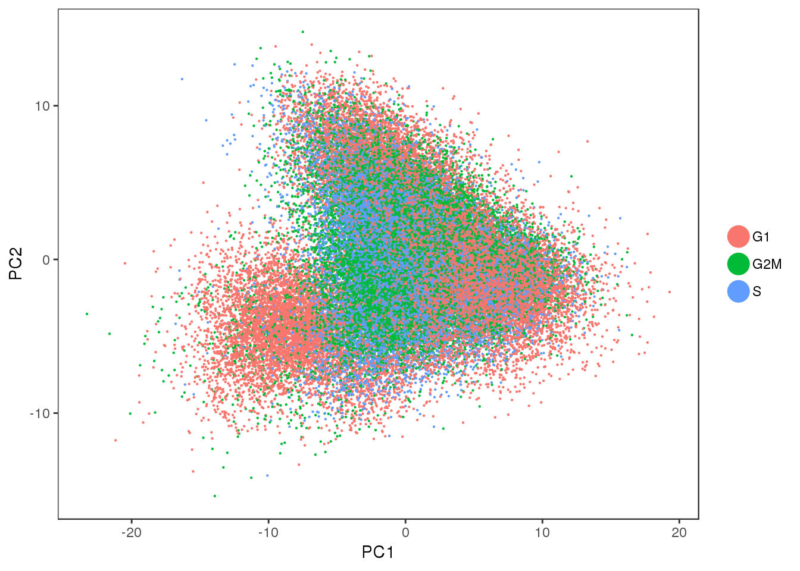
Expand here to see past versions of unnamed-chunk-29-1.png:
| Version | Author | Date |
|---|---|---|
| c371fa5 | PytrikFolkertsma | 2018-12-30 |
| 3057bde | PytrikFolkertsma | 2018-12-07 |
| d806c41 | PytrikFolkertsma | 2018-11-12 |
| 120215c | PytrikFolkertsma | 2018-11-02 |
| 1f7e0da | PytrikFolkertsma | 2018-10-30 |
PCAPlot(all10x.ccregout, group.by='sample_name', pt.size=0.1)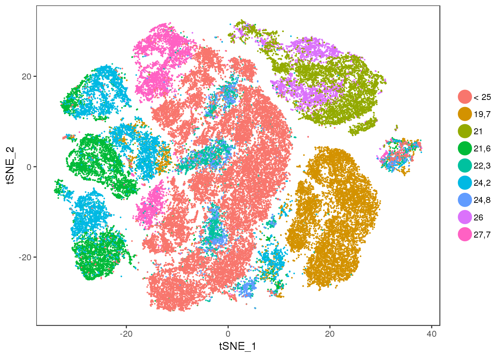
Metadata plots
FeaturePlot(all10x, c("nGene"), cols.use = c("grey","blue"), no.legend=F)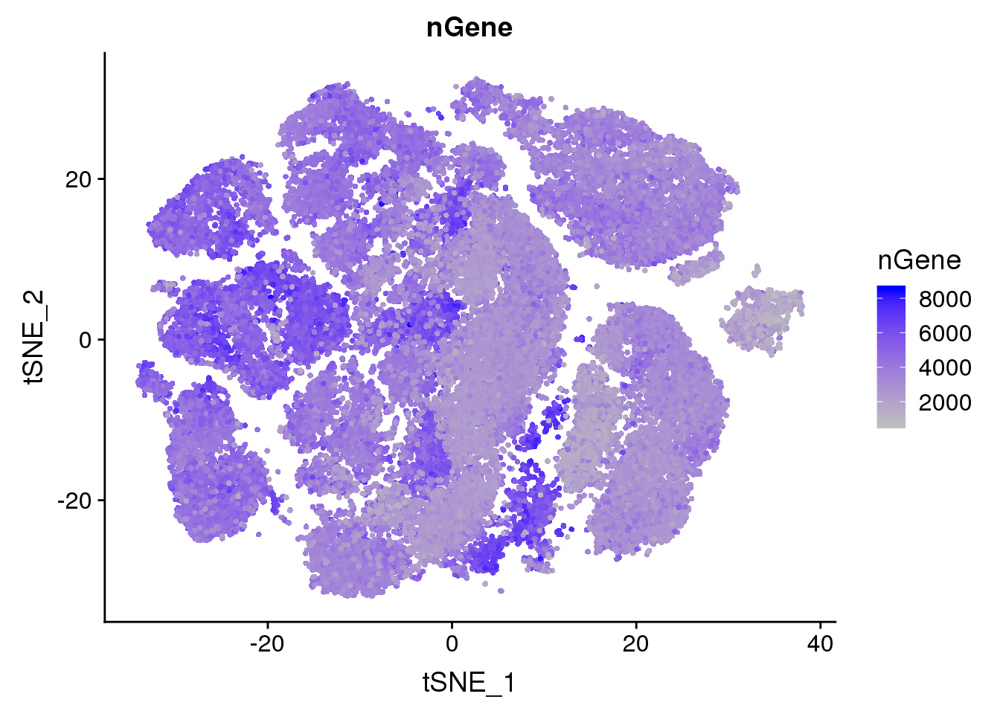
Expand here to see past versions of unnamed-chunk-31-1.png:
| Version | Author | Date |
|---|---|---|
| c371fa5 | PytrikFolkertsma | 2018-12-30 |
| 3057bde | PytrikFolkertsma | 2018-12-07 |
| d806c41 | PytrikFolkertsma | 2018-11-12 |
| 120215c | PytrikFolkertsma | 2018-11-02 |
| 1f7e0da | PytrikFolkertsma | 2018-10-30 |
FeaturePlot(all10x, c("percent.mito"), cols.use = c("grey","blue"), no.legend=F)Expand here to see past versions of unnamed-chunk-32-1.png:
| Version | Author | Date |
|---|---|---|
| c371fa5 | PytrikFolkertsma | 2018-12-30 |
| 3057bde | PytrikFolkertsma | 2018-12-07 |
| d806c41 | PytrikFolkertsma | 2018-11-12 |
| 120215c | PytrikFolkertsma | 2018-11-02 |
| 1f7e0da | PytrikFolkertsma | 2018-10-30 |
FeaturePlot(all10x, c("nUMI"), cols.use = c("grey","blue"), no.legend=F)
Expand here to see past versions of unnamed-chunk-33-1.png:
| Version | Author | Date |
|---|---|---|
| c371fa5 | PytrikFolkertsma | 2018-12-30 |
| 3057bde | PytrikFolkertsma | 2018-12-07 |
| d806c41 | PytrikFolkertsma | 2018-11-12 |
| 120215c | PytrikFolkertsma | 2018-11-02 |
| 1f7e0da | PytrikFolkertsma | 2018-10-30 |
Diff
TSNEPlot(all10x, group.by='diff', pt.size=0.1)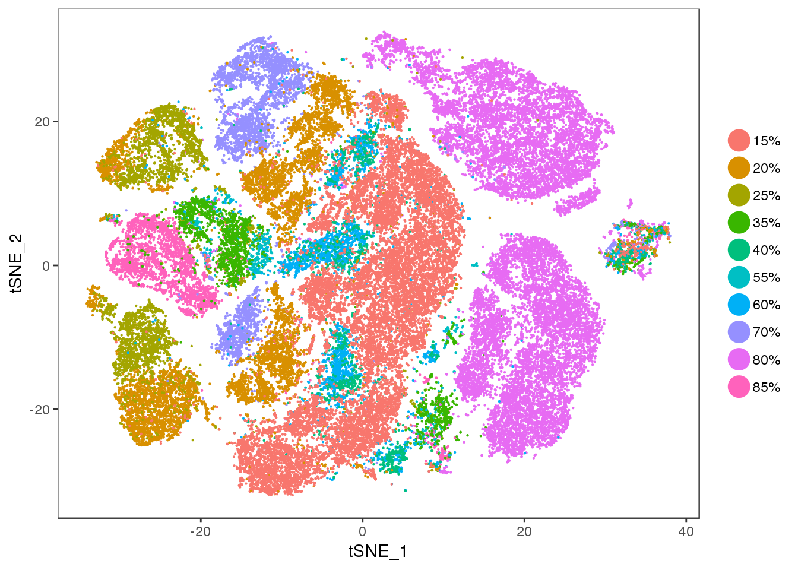
Expand here to see past versions of unnamed-chunk-34-1.png:
| Version | Author | Date |
|---|---|---|
| c371fa5 | PytrikFolkertsma | 2018-12-30 |
| 3057bde | PytrikFolkertsma | 2018-12-07 |
| d806c41 | PytrikFolkertsma | 2018-11-12 |
| 120215c | PytrikFolkertsma | 2018-11-02 |
| 1f7e0da | PytrikFolkertsma | 2018-10-30 |
all10x@meta.data['diff_int'] <- unlist(lapply(as.vector(unlist(all10x@meta.data$diff)), function(x){return(strtoi(strsplit(x, '%')))}))
FeaturePlot(all10x, features.plot='diff_int', cols.use=c('gray', 'blue'), no.legend=F)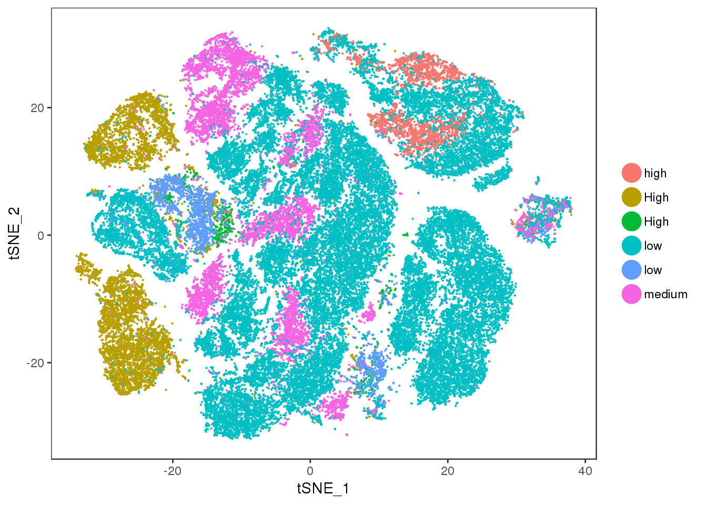
Expand here to see past versions of unnamed-chunk-35-1.png:
| Version | Author | Date |
|---|---|---|
| c371fa5 | PytrikFolkertsma | 2018-12-30 |
| 3057bde | PytrikFolkertsma | 2018-12-07 |
| d806c41 | PytrikFolkertsma | 2018-11-12 |
| 120215c | PytrikFolkertsma | 2018-11-02 |
| 1f7e0da | PytrikFolkertsma | 2018-10-30 |
ucp1.ctrl
TSNEPlot(all10x, group.by='ucp1.ctrl', pt.size=0.1)Expand here to see past versions of unnamed-chunk-36-1.png:
| Version | Author | Date |
|---|---|---|
| c371fa5 | PytrikFolkertsma | 2018-12-30 |
| 3057bde | PytrikFolkertsma | 2018-12-07 |
| d806c41 | PytrikFolkertsma | 2018-11-12 |
| 120215c | PytrikFolkertsma | 2018-11-02 |
| 1f7e0da | PytrikFolkertsma | 2018-10-30 |
ucp1.ne
TSNEPlot(all10x, group.by='ucp1.ne', pt.size=0.1)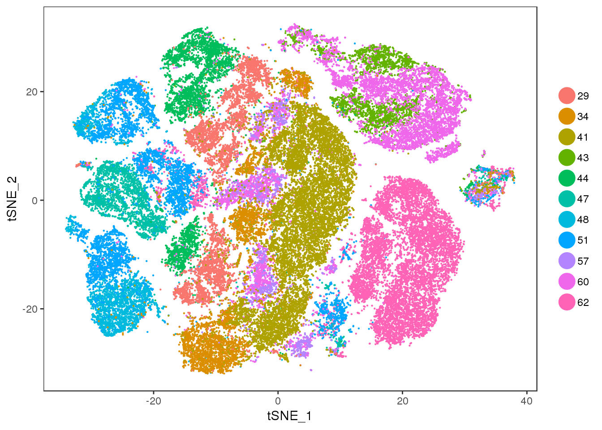
Expand here to see past versions of unnamed-chunk-37-1.png:
| Version | Author | Date |
|---|---|---|
| c371fa5 | PytrikFolkertsma | 2018-12-30 |
| 3057bde | PytrikFolkertsma | 2018-12-07 |
| d806c41 | PytrikFolkertsma | 2018-11-12 |
| 120215c | PytrikFolkertsma | 2018-11-02 |
| 1f7e0da | PytrikFolkertsma | 2018-10-30 |
bmi
TSNEPlot(all10x, group.by='bmi', pt.size=0.1)
Expand here to see past versions of unnamed-chunk-38-1.png:
| Version | Author | Date |
|---|---|---|
| c371fa5 | PytrikFolkertsma | 2018-12-30 |
| 3057bde | PytrikFolkertsma | 2018-12-07 |
| d806c41 | PytrikFolkertsma | 2018-11-12 |
| 1f7e0da | PytrikFolkertsma | 2018-10-30 |
age
TSNEPlot(all10x, group.by='age', pt.size=0.1)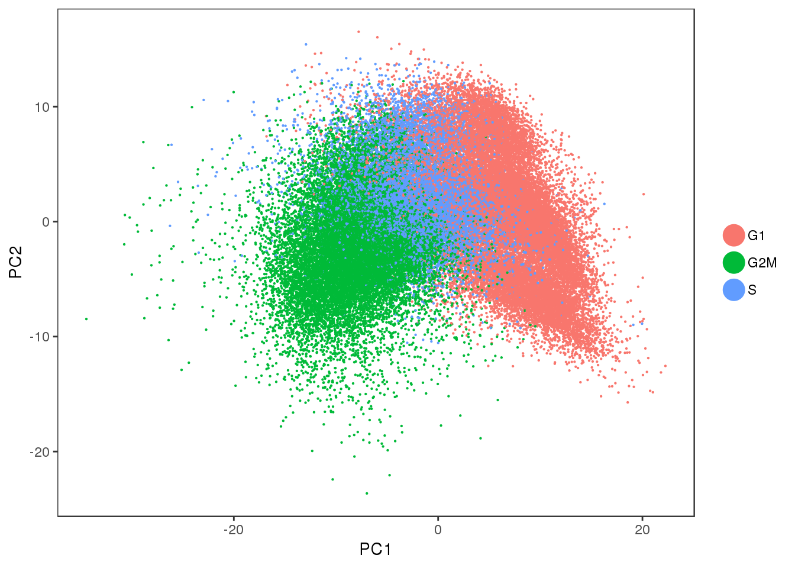
Expand here to see past versions of unnamed-chunk-39-1.png:
| Version | Author | Date |
|---|---|---|
| c371fa5 | PytrikFolkertsma | 2018-12-30 |
| 3057bde | PytrikFolkertsma | 2018-12-07 |
| d806c41 | PytrikFolkertsma | 2018-11-12 |
| 1f7e0da | PytrikFolkertsma | 2018-10-30 |
VlnPlot(all10x, group.by='sample_name', features.plot=c('nGene'), point.size.use = -1, x.lab.rot=T)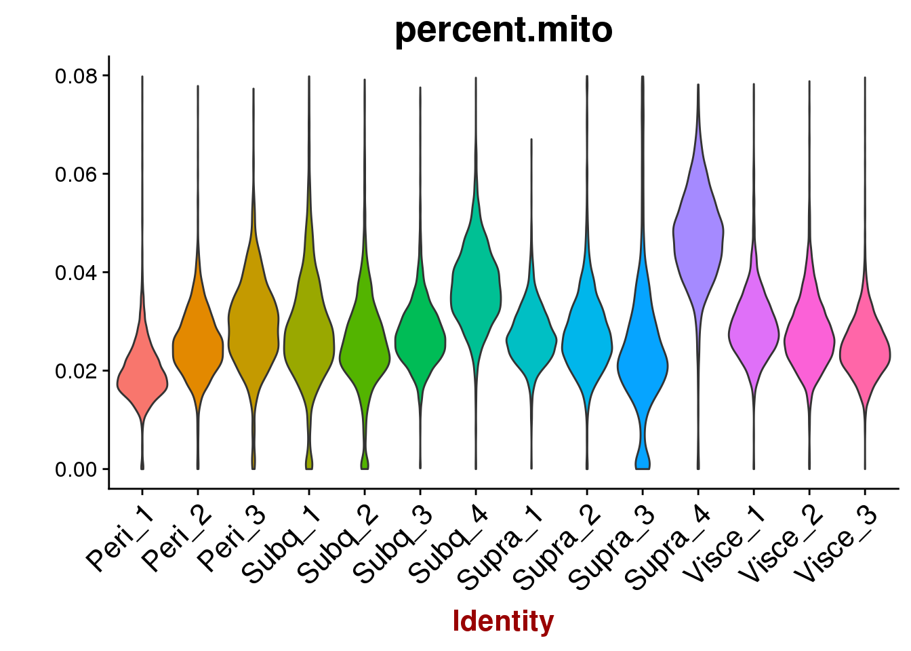
Expand here to see past versions of unnamed-chunk-40-1.png:
| Version | Author | Date |
|---|---|---|
| c371fa5 | PytrikFolkertsma | 2018-12-30 |
| 3057bde | PytrikFolkertsma | 2018-12-07 |
| 1f7e0da | PytrikFolkertsma | 2018-10-30 |
VlnPlot(all10x, group.by='sample_name', features.plot=c('nUMI'), point.size.use = -1, x.lab.rot=T)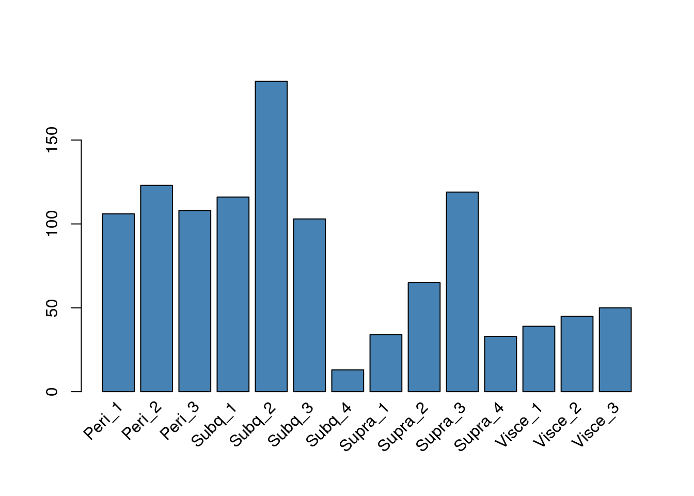
Expand here to see past versions of unnamed-chunk-41-1.png:
| Version | Author | Date |
|---|---|---|
| c371fa5 | PytrikFolkertsma | 2018-12-30 |
| 1f7e0da | PytrikFolkertsma | 2018-10-30 |
VlnPlot(all10x, group.by='sample_name', features.plot=c('percent.mito'), point.size.use = -1, x.lab.rot=T)
Mixture cluster 12
Sample composition in cluster 12.
cluster12 <- SubsetData(all10x, cells.use=rownames(all10x@meta.data)[which(all10x@meta.data$res.0.5 %in% 12)])
rotate_x <- function(data, column_to_plot, labels_vec, rot_angle) {
plt <- barplot(data[[column_to_plot]], col='steelblue', xaxt="n")
text(plt, par("usr")[3], labels = labels_vec, srt = rot_angle, adj = c(1.1,1.1), xpd = TRUE, cex=1)
}
rotate_x((cluster12@meta.data %>% count(sample_name))[,2], 'n', as.vector(unlist((cluster12@meta.data %>% count(sample_name))[,1])), 45)
Expand here to see past versions of unnamed-chunk-43-1.png:
| Version | Author | Date |
|---|---|---|
| c371fa5 | PytrikFolkertsma | 2018-12-30 |
cluster12 <- SubsetData(all10x, cells.use=rownames(all10x@meta.data)[which(all10x@meta.data$res.0.5 %in% 12)])
rotate_x <- function(data, column_to_plot, labels_vec, rot_angle) {
plt <- barplot(data[[column_to_plot]], col='steelblue', xaxt="n")
text(plt, par("usr")[3], labels = labels_vec, srt = rot_angle, adj = c(1.1,1.1), xpd = TRUE, cex=1)
}
rotate_x((cluster12@meta.data %>% count(sample_name))[,2], 'n', as.vector(unlist((cluster12@meta.data %>% count(sample_name))[,1])), 90)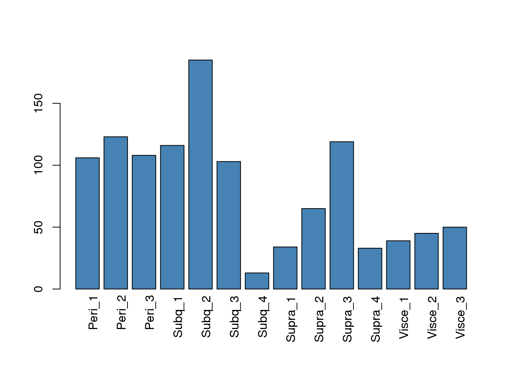
Expand here to see past versions of unnamed-chunk-44-1.png:
| Version | Author | Date |
|---|---|---|
| c371fa5 | PytrikFolkertsma | 2018-12-30 |
Plots
all10x@meta.data$mixture <- ifelse(all10x@meta.data$res.0.5==12, "mixture", "rest")
VlnPlot(all10x, features.plot=c('nGene', 'MALAT1', 'NEAT1', 'FN1', 'ITGB1', 'COL1A1', 'COL1A2', 'percent.mito'), group.by='mixture', point.size.use=-1, nCol=4)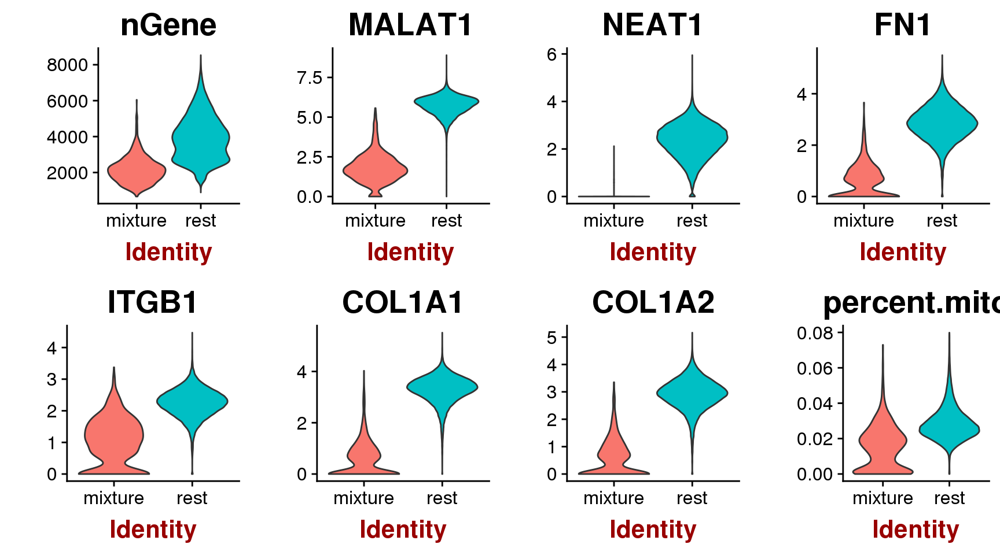
Expand here to see past versions of fig4-1.png:
| Version | Author | Date |
|---|---|---|
| 2b73a74 | PytrikFolkertsma | 2018-12-05 |
Figures for report
fig1 <- plot_grid(
PCAPlot(all10x, group.by='Phase', pt.size=0.1),
TSNEPlot(all10x, group.by='sample_name', pt.size=0.1),
TSNEPlot(all10x, group.by='Phase', pt.size=0.1),
TSNEPlot(all10x.ccregout, group.by='sample_name', pt.size=0.1),
labels = "auto", nrow = 2)Expand here to see past versions of unnamed-chunk-45-1.png:
| Version | Author | Date |
|---|---|---|
| c371fa5 | PytrikFolkertsma | 2018-12-30 |
Expand here to see past versions of unnamed-chunk-45-2.png:
| Version | Author | Date |
|---|---|---|
| c371fa5 | PytrikFolkertsma | 2018-12-30 |
Expand here to see past versions of unnamed-chunk-45-3.png:
| Version | Author | Date |
|---|---|---|
| c371fa5 | PytrikFolkertsma | 2018-12-30 |
Expand here to see past versions of unnamed-chunk-45-4.png:
| Version | Author | Date |
|---|---|---|
| c371fa5 | PytrikFolkertsma | 2018-12-30 |
save_plot("plots/180504_pca_tsne.pdf", fig1, base_width=12, base_height = 9)fig1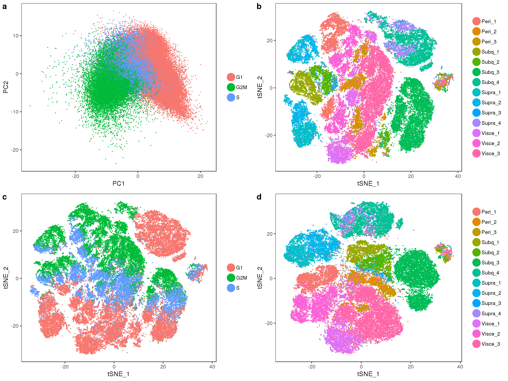
Expand here to see past versions of fig1-1.png:
| Version | Author | Date |
|---|---|---|
| 1f7e0da | PytrikFolkertsma | 2018-10-30 |
sfig <- plot_grid(
pm,
numi,
ngene,
labels="auto", nrow=1
)Warning: Removed 1 rows containing missing values (geom_hline).save_plot("plots/supplementary_figures/sfig_180504_qcplots.pdf", sfig, base_width=12, base_height=3)
sfig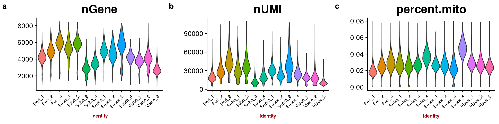
Expand here to see past versions of fig2-1.png:
| Version | Author | Date |
|---|---|---|
| c371fa5 | PytrikFolkertsma | 2018-12-30 |
| 1f7e0da | PytrikFolkertsma | 2018-10-30 |
sfig2 <- plot_grid(
PCElbowPlot(all10x, num.pc=30),
PCElbowPlot(all10x.ccregout, num.pc=30),
labels="auto", nrow=1)
save_plot("plots/supplementary_figures/sfig_180504_pcelbow.pdf", sfig2, base_width=12, base_height=4)
sfig2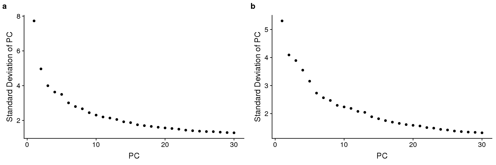
Expand here to see past versions of fig3-1.png:
| Version | Author | Date |
|---|---|---|
| 19b3950 | PytrikFolkertsma | 2018-11-05 |
| 661156c | PytrikFolkertsma | 2018-11-05 |
Mixture cluster figure
get_violin_plot <- function(x){
return(VlnPlot(all10x, features.plot=c(x), point.size.use=-1, group.by='mixture', size.title.use=14, remove.legend=T) + theme(axis.title.x=element_blank()))
}
fig2_first_row <- plot_grid(
TSNEPlot(all10x, group.by='sample_name', pt.size=0.1) + theme(legend.position=c(0.1, 0.5), legend.key = element_blank(), legend.background= element_rect(fill=alpha('white', 0.8), size=0.5, linetype='solid', colour=alpha('black', 0.3))),
DimPlot(all10x, reduction.use='tsne', cells.highlight = rownames(all10x@meta.data)[all10x@meta.data$res.0.5 == 12], cols.highlight='blue', cols.use='gray', pt.size=0.1),
labels=c('a', 'b')
)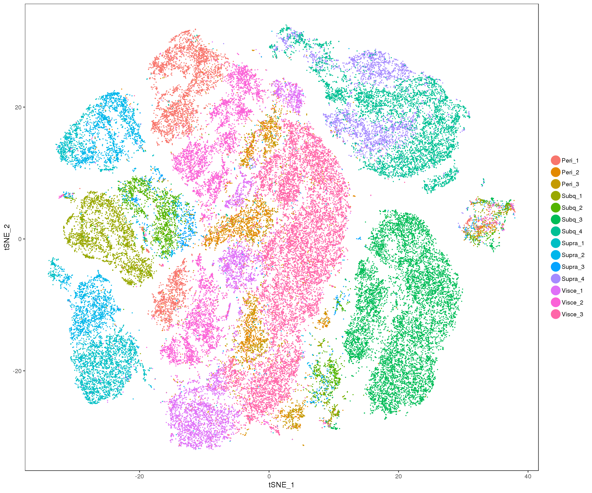
Expand here to see past versions of fig5-1.png:
| Version | Author | Date |
|---|---|---|
| 2b73a74 | PytrikFolkertsma | 2018-12-05 |

Expand here to see past versions of fig5-2.png:
| Version | Author | Date |
|---|---|---|
| 2b73a74 | PytrikFolkertsma | 2018-12-05 |
fig2_violin <- plot_grid(
get_violin_plot('nGene'),
get_violin_plot('MALAT1'),
get_violin_plot('NEAT1'),
get_violin_plot('FN1'),
get_violin_plot('ITGB1'),
get_violin_plot('COL1A1'),
get_violin_plot('COL1A2'),
get_violin_plot('percent.mito'),
labels=c('d', 'e', 'f', 'g', 'h', 'i', 'j', 'k'), nrow=2
)
fig2_barplot <- plot_grid(ggplot(data=cluster12@meta.data %>% count(sample_name), aes(x=sample_name, y=n)) +
geom_bar(stat="identity", position='dodge') +
scale_y_continuous(expand=c(0,0)) +
theme(axis.line.y=element_blank(), axis.ticks.y=element_blank(), axis.title.x=element_blank(), axis.title.y=element_blank()) +
coord_flip(), labels=c('c'))
fig2_second_row <- plot_grid(fig2_barplot, fig2_violin, rel_widths=c(2/8, 6/8))
fig2 <- plot_grid(
fig2_first_row,
fig2_second_row,
nrow=2
)
fig2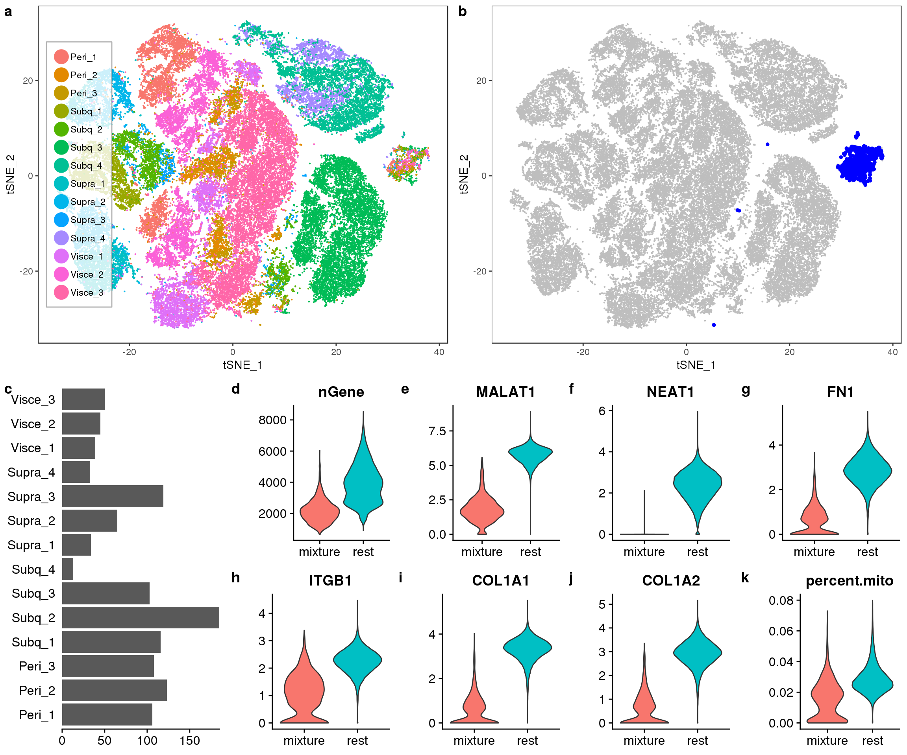
Expand here to see past versions of fig5-3.png:
| Version | Author | Date |
|---|---|---|
| 17c2de8 | PytrikFolkertsma | 2018-12-05 |
save_plot("plots/180504_mixture.pdf", fig2, base_width=12, base_height=10)Supplementary table: nr of cells before and after QC.
ncells sample_name n.before n.after
1 Peri_1 3973 3934
2 Peri_2 2889 2852
3 Peri_3 1346 1273
4 Subq_1 3087 3007
5 Subq_2 2071 2002
6 Subq_3 8661 8619
7 Subq_4 5022 4885
8 Supra_1 3056 3047
9 Supra_2 3664 3570
10 Supra_3 1035 880
11 Supra_4 3014 2785
12 Visce_1 4624 4539
13 Visce_2 4956 4893
14 Visce_3 10121 10085write.table(ncells, file='tables/10x-180504-nCells.txt', sep='\t', row.names = F, quote=F)Session information
sessionInfo()R version 3.4.3 (2017-11-30)
Platform: x86_64-redhat-linux-gnu (64-bit)
Running under: Storage
Matrix products: default
BLAS/LAPACK: /usr/lib64/R/lib/libRblas.so
locale:
[1] LC_CTYPE=en_US.UTF-8 LC_NUMERIC=C
[3] LC_TIME=en_US.UTF-8 LC_COLLATE=en_US.UTF-8
[5] LC_MONETARY=en_US.UTF-8 LC_MESSAGES=en_US.UTF-8
[7] LC_PAPER=en_US.UTF-8 LC_NAME=C
[9] LC_ADDRESS=C LC_TELEPHONE=C
[11] LC_MEASUREMENT=en_US.UTF-8 LC_IDENTIFICATION=C
attached base packages:
[1] stats graphics grDevices utils datasets methods base
other attached packages:
[1] bindrcpp_0.2.2 dplyr_0.7.6 Seurat_2.3.4 Matrix_1.2-14
[5] cowplot_0.9.3 ggplot2_3.0.0
loaded via a namespace (and not attached):
[1] Rtsne_0.13 colorspace_1.3-2 class_7.3-14
[4] modeltools_0.2-22 ggridges_0.5.0 mclust_5.4.1
[7] rprojroot_1.3-2 htmlTable_1.12 base64enc_0.1-3
[10] rstudioapi_0.7 proxy_0.4-22 flexmix_2.3-14
[13] bit64_0.9-7 mvtnorm_1.0-8 codetools_0.2-15
[16] splines_3.4.3 R.methodsS3_1.7.1 robustbase_0.93-2
[19] knitr_1.20 Formula_1.2-3 jsonlite_1.5
[22] workflowr_1.1.1 ica_1.0-2 cluster_2.0.7-1
[25] kernlab_0.9-27 png_0.1-7 R.oo_1.22.0
[28] compiler_3.4.3 httr_1.3.1 backports_1.1.2
[31] assertthat_0.2.0 lazyeval_0.2.1 lars_1.2
[34] acepack_1.4.1 htmltools_0.3.6 tools_3.4.3
[37] igraph_1.2.2 gtable_0.2.0 glue_1.3.0
[40] RANN_2.6 reshape2_1.4.3 Rcpp_0.12.18
[43] trimcluster_0.1-2.1 gdata_2.18.0 ape_5.1
[46] nlme_3.1-137 iterators_1.0.10 fpc_2.1-11.1
[49] gbRd_0.4-11 lmtest_0.9-36 stringr_1.3.1
[52] irlba_2.3.2 gtools_3.8.1 DEoptimR_1.0-8
[55] MASS_7.3-50 zoo_1.8-3 scales_1.0.0
[58] doSNOW_1.0.16 parallel_3.4.3 RColorBrewer_1.1-2
[61] yaml_2.2.0 reticulate_1.10 pbapply_1.3-4
[64] gridExtra_2.3 rpart_4.1-13 segmented_0.5-3.0
[67] latticeExtra_0.6-28 stringi_1.2.4 foreach_1.4.4
[70] checkmate_1.8.5 caTools_1.17.1.1 bibtex_0.4.2
[73] Rdpack_0.9-0 SDMTools_1.1-221 rlang_0.2.2
[76] pkgconfig_2.0.2 dtw_1.20-1 prabclus_2.2-6
[79] bitops_1.0-6 evaluate_0.11 lattice_0.20-35
[82] ROCR_1.0-7 purrr_0.2.5 bindr_0.1.1
[85] labeling_0.3 htmlwidgets_1.2 bit_1.1-14
[88] tidyselect_0.2.4 plyr_1.8.4 magrittr_1.5
[91] R6_2.2.2 snow_0.4-2 gplots_3.0.1
[94] Hmisc_4.1-1 pillar_1.3.0 whisker_0.3-2
[97] foreign_0.8-71 withr_2.1.2 fitdistrplus_1.0-9
[100] mixtools_1.1.0 survival_2.42-6 nnet_7.3-12
[103] tsne_0.1-3 tibble_1.4.2 crayon_1.3.4
[106] hdf5r_1.0.0 KernSmooth_2.23-15 rmarkdown_1.10
[109] grid_3.4.3 data.table_1.11.4 git2r_0.23.0
[112] metap_1.0 digest_0.6.16 diptest_0.75-7
[115] tidyr_0.8.1 R.utils_2.7.0 stats4_3.4.3
[118] munsell_0.5.0 This reproducible R Markdown analysis was created with workflowr 1.1.1